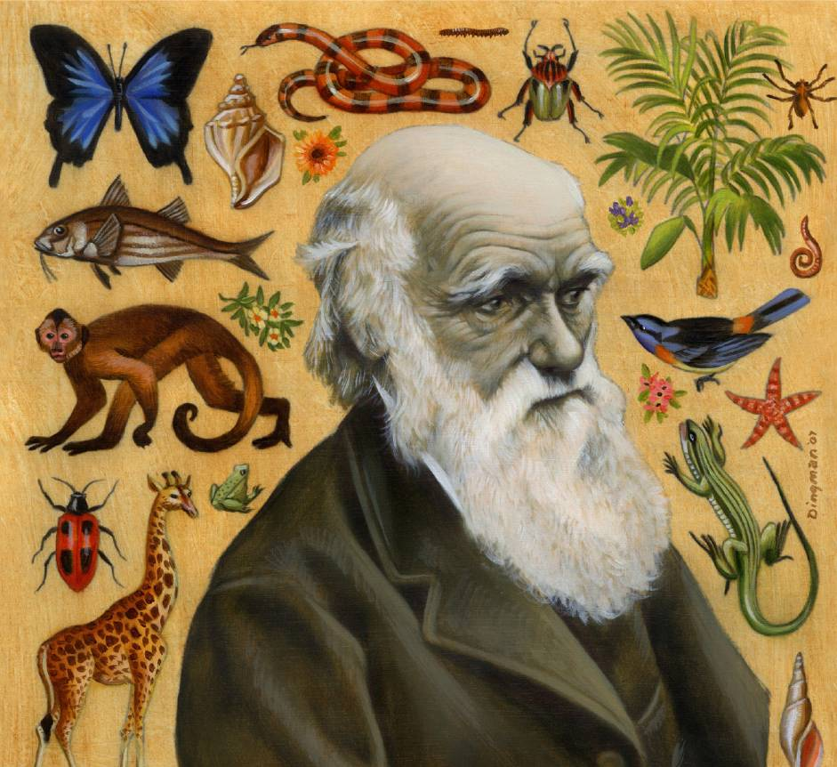
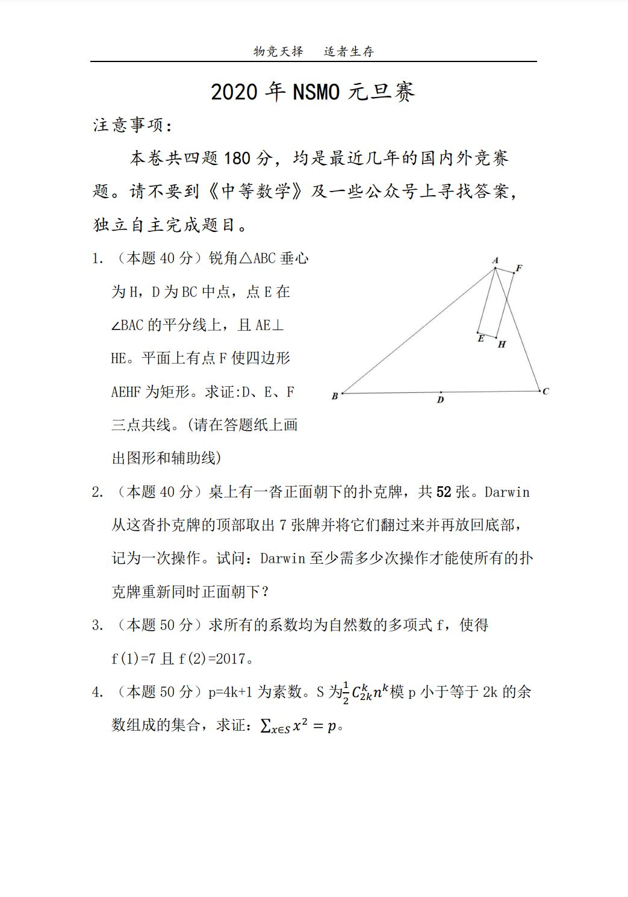

2020年NSMO元旦赛官网 |
|  |
物竞天择 适者生存 |
Natural Selection Mathematical Olympiad |
|  |
| PDF版链接：https://pan.baidu.com/s/11mfwkWbrvjfAkrYjS-08KQ |
注意事项： 1.请在2019年12月28日早上11点前交卷 2.独立自主完成题目 3.仅限文澜中学学生参与 4.初三（5）（6）班的同学，可以到陈晅处领取纸质版试卷，但数量有限。其他班级的同学，请自行抄试题获打印。 5.交卷方式：请将解答清晰的写在A4或A3纸上，表清题号和页码。 （5）（6）班的同学可以直接交给陈晅。其他同学，请发2844365898@qq.com,PDF格式（可使用扫描全能王等软件） 交卷时请在第一页上清晰的标注出你的“名字”（代表你身份即可不必写真实姓名） 6.本次比赛Au:Ag:Cu:总人数=3:3:4:10。做出一题者将会有特别奖，有巧妙解答者会有巧解奖。 |